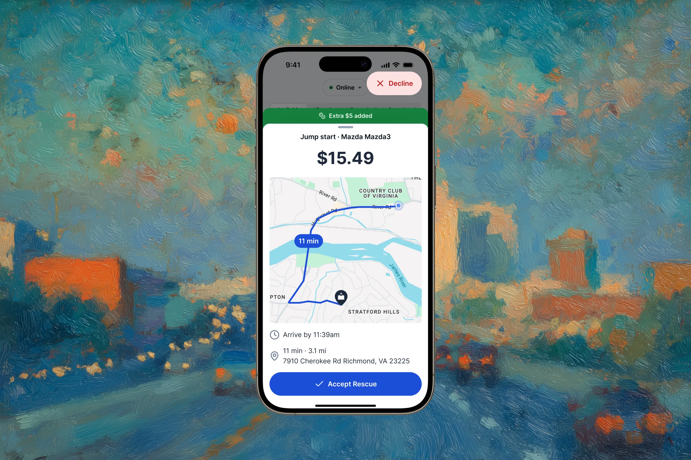
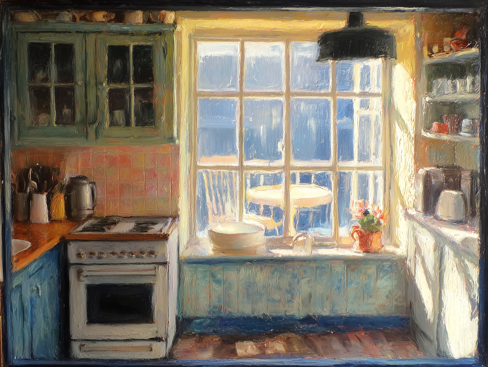
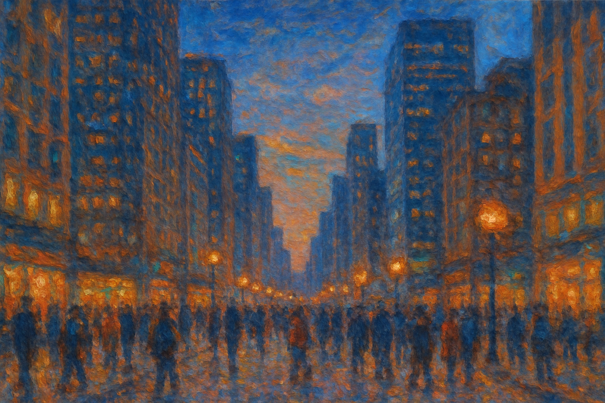

I'm a product designer who builds end-to-end—from user research and prototypes to shipped pixels and measurable outcomes. I care about execution quality, interaction details, and making thoughtful trade-offs under real constraints. Currently looking for my next role.
Most recently, I was a Staff Product Designer at Curbside SOS working on roadside assistance. Before that, I connected hungry diners with restaurants at Grubhub and crafted mobile experiences at WillowTree. I also founded Vocable AAC, an open-source app that lets people with speech disabilities communicate using head tracking.
I'm looking for a role where I can own product end-to-end—where craft matters, shipping fast is expected, and I can work closely with a small team that cares about quality. I'm drawn to consumer products, especially mobile, where thoughtful details and interaction design make a real difference.
View my resume or connect on LinkedIn.
Send me a messageSelected Work


